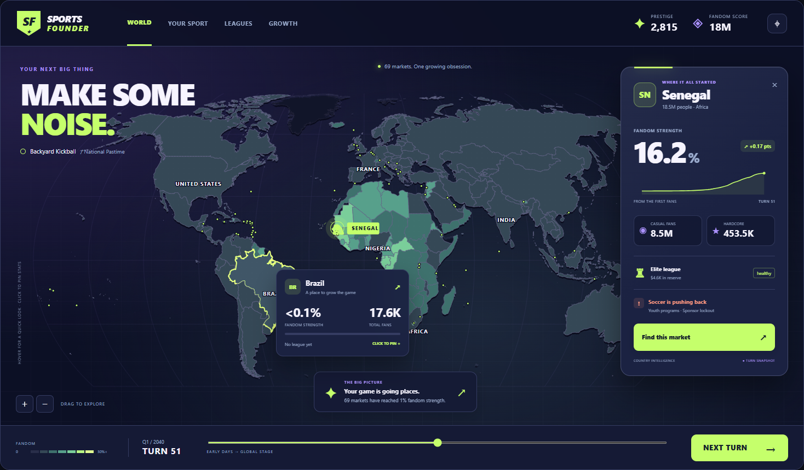

01
Floodlights
Night-match energy. A world worth taking over.

Deep indigo, electric lime, glowing selection rings and a floating scouting card. The sleekest direction; strong atmosphere without making the map hard to read.
Try Floodlights ↗